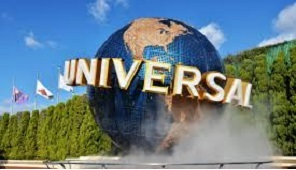

大阪環球影城
日本環球影城（日語：ユニバーサル・スタジオ・ジャパン，英語：Universal Studios Japan）位於日本大阪市此花區，是世界4個環球影城主題公園之一，1998年10月28日由當時尚未擔任加州州長的美國動作演員阿諾·史瓦辛格主持動工儀式，2001年3月31日開幕。其設計與美國奧蘭多的環球影城相近，有部份機動遊戲相同。包括《侏羅紀公園》河流探險、《魔鬼终结者2:3-D》 、《蜘蛛人》、《大白鯊》探險等。
日本環球影城所在地原為日立造船與住友金屬工業等重工業的工廠使用，工廠遷移後，以定期借地權方式租借予影城。環球影城入場人士主要為日本國內遊客，或鄰近亞洲地區，如中國大陸、香港及台灣，其亞洲各國旅客。2005年，投資銀行高盛成為日本環球影城大股東，環球電影則佔有少量股權。2013年12月13日，香港太盟投資集團宣布入股2億5千萬美元在日本環球影城的營運者身上，但是沒有透露所獲得的股權比例。
根據2012年AECOM和TEA的報告，日本環球影城在2012年有910萬人次進場，在全世界的主題樂園中排名第九位，在亞洲排名第三。
2012年5月10日斥資5億美元擴建位於大阪市郊的環球片場，在主題公園內增加一個哈利波特園區，於2014年7月開幕。新園區內會有多個景點和遊戲，包括外觀完整重現的霍格華茲城堡、活米村。
2016年受到舉行萬聖節相關活動好評影響，單月入園人數已衝高到176萬人，創下開幕以來歷年單月入園人數新高紀錄。2017年日本環球影城門票繼續調漲，而這已經是日本環球影城連續8年調漲票價。
2017年2月28日康卡斯特宣布將以2,548億日圓(22.7億美元)收購其尚未持有的日本環球影城(Universal Studios Japan, USJ)49%股權。至此日本環球影城為康卡斯特旗下的NBC環球集團全資擁有。
2017年4月21日建於原「回到未來」遊樂設施舊址上的小小兵主題區也正式對外開放。這座小小兵樂園是世界上規模最大的樂園。樂園投資約100億日圓（約合臺幣二十七億五千萬元），花費了兩年零九個月建造。在這座樂園當中，除了有小小兵主題的遊樂設施之外，還有可愛的小小兵漢堡和周邊商品售賣。
●交通
◎鐵路
JR西日本櫻島線環球城車站步行數分鐘
◎汽車
淀川左岸線 環球影城出口
●居住酒店選擇
近鐵環球城市酒店
京阪環球影城酒店
京阪環球塔樓酒店
環球影城港灣酒店
●外圍商場
日本環球影城商場設於影城外圍，設有多間食肆和商店，包括大阪章魚燒博物館、回轉壽司、巴布甘蝦業公司、硬石餐廳、摩斯漢堡、Jump Shop等等。